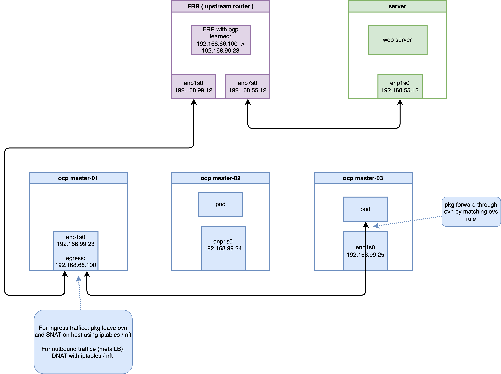

Deep Dive: BGP-Based Egress Service in OpenShift 4.19 with OVN-Kubernetes
Overview
In OpenShift 4.19, the Egress Service
provides a sophisticated mechanism for managing outbound traffic
from applications. Unlike traditional Egress IPs, which are
manually assigned to namespaces, the Egress Service leverages
LoadBalancer Service types to dynamically allocate
Egress IPs and integrates seamlessly with BGP (via MetalLB and
FRR-K8s) for route advertisement. This document explores the
architectural implementation, environment setup, and a deep-dive
verification of the traffic flow using OVS flows and
nftables.
1. Laboratory Environment and Validation Topology
To demonstrate the validity and feasibility of this
technology, a verification environment was constructed using
native Linux virtual machines (KVM/libvirt) on a CentOS 9
bare-metal host. The host bridge br-ocp uses the
subnet 192.168.99.0/24 (Host IP:
192.168.99.1).
1.1 Environment Specifications
- OpenShift 4.19 Virtual Cluster:
- Consists of 3 nodes (Compact nodes acting as both Master and Worker).
- Network interfaces are attached to
br-ocp. - Uses OVN-Kubernetes as the default CNI with MetalLB Operator installed.
- Node IPs:
192.168.99.23~192.168.99.25 - Egress IP Range:
192.168.66.100/24
- KVM Router Node (CentOS 9):
- Simulates a Data Center Core Switch running Software FRR for BGP routing.
- eth0 (Connected to
br-ocp):192.168.99.12 - eth1 (External network simulator):
192.168.55.12
- KVM Server Node (CentOS 9):
- Acts as an external application server to verify SNAT.
- eth0 (Connected to Router eth1):
192.168.55.13, with default gateway pointing to192.168.55.12.

1.2 Router (FRR) Node Configuration
The Router node must have IP forwarding enabled and FRR configured to listen for BGP advertisements from the OpenShift cluster nodes.
# 1. Install base routing components
sudo dnf install -y frr
# Explicitly enable bgpd in the daemons file before starting
sudo sed -i 's/^bgpd=no/bgpd=yes/' /etc/frr/daemons
sudo systemctl enable --now frr
# 2. Enable IPv4 kernel forwarding
echo "net.ipv4.ip_forward = 1" | sudo tee -a /etc/sysctl.d/99-ipforward.conf
sudo sysctl -p /etc/sysctl.d/99-ipforward.conf
# 3. Configure the core FRR configuration file
cat <<EOF | sudo tee /etc/frr/frr.conf
frr defaults traditional
log syslog informational
no ipv6 forwarding
!
router bgp 64512
bgp router-id 192.168.99.12
! Configure iBGP neighbors for each OCP cluster node
neighbor 192.168.99.23 remote-as 64512
neighbor 192.168.99.24 remote-as 64512
neighbor 192.168.99.25 remote-as 64512
! Configure iBGP ECMP and network advertisement within the address-family
address-family ipv4 unicast
network 192.168.55.0/24
maximum-paths ibgp 4
exit-address-family
!
line vty
!
EOF
# 4. Reload FRR to apply changes
sudo systemctl restart frr1.3 Server Node Configuration (Traffic Endpoint)
The Server node acts as the target for egress traffic. It requires a route back to the Egress IP range via the Router.
# Configure route to the Egress IP pool via the Router
sudo ip route add 192.168.66.100 via 192.168.55.12
# Verify routing table
ip r
# Output should look like:
# default via 192.168.99.1 dev enp1s0 proto static metric 100
# 192.168.55.0/24 dev enp1s0 proto kernel scope link src 192.168.55.13 metric 100
# 192.168.66.100 via 192.168.55.12 dev enp1s0
# 192.168.99.0/24 dev enp1s0 proto kernel scope link src 192.168.99.13 metric 100
# Start background listeners to verify connectivity
# (Listening on ports 80 and 8080 to prove Egress IP is not restricted by Service ports)
nohup python3 -m http.server 80 &
nohup python3 -m http.server 8080 &
# Monitor incoming traffic to observe the Egress IP (192.168.66.100)
sudo tcpdump -i any 'tcp port 80 or tcp port 8080' -n2. OpenShift Cluster Configuration
The following steps were performed using the oc
client on a control terminal.
2.1 Preparing Host Interfaces
Ensure the secondary IP range is reachable by adjusting the Node network configuration if necessary.
# Removing auxiliary IP addresses to the br-ex interface on nodes for testing/routing purposes
oc debug node/master-01-demo -- chroot /host /bin/bash -c "nmcli connection modify enp1s0 -ipv4.addresses 192.168.66.23/24"
oc debug node/master-02-demo -- chroot /host /bin/bash -c "nmcli connection modify enp1s0 -ipv4.addresses 192.168.66.24/24"
oc debug node/master-03-demo -- chroot /host /bin/bash -c "nmcli connection modify enp1s0 -ipv4.addresses 192.168.66.25/24"
# Enable additional routing capabilities and route advertisement in OVN-Kubernetes
oc patch Network.operator.openshift.io cluster --type=merge -p \
'{
"spec": {
"additionalRoutingCapabilities": {
"providers": ["FRR"]
},
"defaultNetwork": {
"ovnKubernetesConfig": {
"routeAdvertisements": "Enabled"
}
}
}
}'2.2 BGP Configuration with FRR-K8s
Define the FRRConfiguration to establish BGP
peering with the external Router.
这里配置错误，一个节点上，只能有一个FRRConfiguration配置。
# apiVersion: frrk8s.metallb.io/v1beta1
# kind: FRRConfiguration
# metadata:
# name: bgp-core-router
# namespace: openshift-frr-k8s
# # labels:
# # use-for-advertisements: 'true' # 供 OVN-K 路由发布使用
# spec:
# bgp:
# bfdProfiles:
# - name: fast-bfd
# detectMultiplier: 3 # 检测倍数：连续 3 次未收到报文则判定链路故障
# routers:
# - asn: 64512 # OCP 集群私有 AS 号
# neighbors:
# - address: 192.168.99.12 # 物理路由器(FRR VM)邻居 IP
# asn: 64512
# disableMP: true # 必须设为 true（IPv4/IPv6 单独建会话）
# bfdProfile: fast-bfd # 使用上面定义的 BFD 配置文件
# toAdvertise:
# allowed:
# mode: all
# toReceive:
# allowed:
# mode: filtered # 开启过滤模式
# prefixes:
# - prefix: 192.168.55.0/24 # 【白名单】只收这一条
# # prefixes:
# # - 192.168.66.100/32 # 必须显式允许此前缀发往外部路由器2.3 MetalLB and Egress Service Deployment
Configure MetalLB to provide the IP pool and deploy the
EgressService resource.
apiVersion: metallb.io/v1beta1
kind: MetalLB
metadata:
name: metallb
namespace: metallb-system# 1. Initialize MetalLB IP Address Pool
apiVersion: metallb.io/v1beta1
kind: IPAddressPool
metadata:
name: egress-pool
namespace: metallb-system
spec:
addresses:
- 192.168.66.100-192.168.66.100
---
# 2. Deploy Service and EgressService
apiVersion: v1
kind: Service
metadata:
name: egress-identity
namespace: demo-egress
annotations:
metallb.universe.tf/address-pool: egress-pool
spec:
type: LoadBalancer
selector:
app: requester
ports:
- name: http
protocol: TCP
port: 8080
targetPort: 8080
---
apiVersion: k8s.ovn.org/v1
kind: EgressService
metadata:
name: egress-identity
namespace: demo-egress
spec:
sourceIPBy: "LoadBalancerIP"
nodeSelector:
matchLabels:
node-role.kubernetes.io/master: ""2.4 BGP Advertisement for Egress IP
Configure the cluster to advertise the specific Egress IP prefix through BGP.
apiVersion: frrk8s.metallb.io/v1beta1
kind: FRRConfiguration
metadata:
name: bgp-advertise-egress-identity-bgp
namespace: openshift-frr-k8s
labels:
use-for-advertisements: 'true' # 供 OVN-K 路由发布使用
spec:
bgp:
bfdProfiles:
- name: fast-bfd
detectMultiplier: 3 # 检测倍数：连续 3 次未收到报文则判定链路故障
routers:
- asn: 64512 # OCP 集群私有 AS 号
neighbors:
- address: 192.168.99.12 # 物理路由器(FRR VM)邻居 IP
asn: 64512
disableMP: true # 必须设为 true（IPv4/IPv6 单独建会话）
bfdProfile: fast-bfd # 使用上面定义的 BFD 配置文件
toAdvertise:
allowed:
mode: all
toReceive:
allowed:
mode: filtered # 开启过滤模式
prefixes:
- prefix: 192.168.55.0/24 # 【白名单】只收这一条
prefixes:
- 192.168.66.100/32 # 必须显式允许此前缀发往外部路由器
nodeSelector:
matchLabels:
egress-service.k8s.ovn.org/demo-egress-egress-identity: ""3. Results and Verification
3.1 Connectivity Test
Deploy test Pods and verify outbound traffic source IP.
# Deployment of test Pods
cat <<EOF | oc apply -f -
apiVersion: apps/v1
kind: Deployment
metadata:
name: edge-request-deployment
namespace: demo-egress
spec:
replicas: 2
selector:
matchLabels:
app: requester
template:
metadata:
labels:
app: requester
spec:
affinity:
nodeAffinity:
requiredDuringSchedulingIgnoredDuringExecution:
nodeSelectorTerms:
- matchExpressions:
- key: kubernetes.io/hostname
operator: In
values:
- master-02-demo
- master-03-demo
containers:
- name: toolkit
image: quay.io/wangzheng422/qimgs:centos9-test-2025.12.18.v01
command: ["sleep", "infinity"]
EOF
# Execute curl from test Pods
# (Example using Node 3 Pod)
oc exec -it $NODE3_POD -n demo-egress -- curl -I http://192.168.55.13 --connect-timeout 2
# on external server, you can
# curl -vvv http://192.168.66.100:8080
# on ocp node, there is DNAT defined.
iptables -L -v -n -t nat | grep DNAT
# 0 0 DNAT tcp -- * * 0.0.0.0/0 192.168.66.100 tcp dpt:8080 to:172.22.74.226:80803.2 Routing Verification (External Router)
On the external FRR router, verify the BGP route learned from the cluster.
oc get EgressService/egress-identity -n demo-egress -o yaml
# apiVersion: k8s.ovn.org/v1
# kind: EgressService
# metadata:
# creationTimestamp: "2026-03-01T15:28:00Z"
# generation: 1
# name: egress-identity
# namespace: demo-egress
# resourceVersion: "185799"
# uid: 27180cdd-5010-4eb5-b716-98682a4296c4
# spec:
# nodeSelector:
# matchLabels:
# node-role.kubernetes.io/master: ""
# sourceIPBy: LoadBalancerIP
# status:
# host: master-01-demo
vtysh -c 'show ip route bgp'
# Codes: K - kernel route, C - connected, S - static, R - RIP,
# O - OSPF, I - IS-IS, B - BGP, E - EIGRP, N - NHRP,
# T - Table, v - VNC, V - VNC-Direct, F - PBR,
# f - OpenFabric,
# > - selected route, * - FIB route, q - queued, r - rejected, b - backup
# t - trapped, o - offload failure
# B>* 192.168.66.100/32 [200/0] via 192.168.99.23, enp1s0, weight 1, 00:18:37Comment: The route 192.168.66.100/32 is correctly advertised by the node (192.168.99.23) currently hosting the egress gateway.
4. Deep-Dive: Interception and SNAT Mechanism Analysis
In the OVN-Kubernetes architecture (OCP 4.14+),
EgressService has moved away from traditional OVN
Logical Router policies and iptables MASQUERADE. It
now utilizes OVS OpenFlow registers for
redirection and native Linux nftables dynamic
maps for SNAT.
4.1 Stage 1: OVS Interception on Source Node (master-03)
When a packet from a Pod (10.133.0.3) enters
br-int, it matches a high-priority OpenFlow
rule.
# Query OVS flows on the source node (master-03)
oc exec -n openshift-ovn-kubernetes $OVN_NODE_03_POD -c ovn-controller -- ovs-ofctl dump-flows br-int | grep "10.133.0.3"Observation (Table 25):
cookie=0x3e1ba399, duration=6354.264s, table=25, n_packets=0, n_bytes=0, idle_age=6354, priority=101,ip,metadata=0x5,nw_src=10.133.0.3 actions=load:0x64580004->NXM_NX_XXREG0[96..127],load:0x64580002->NXM_NX_XXREG1[64..95],mod_dl_src:0a:58:64:58:00:02,load:0x1->NXM_NX_REG15[],load:0x1->NXM_NX_REG10[0],load:0->OXM_OF_PKT_REG4[32..47],load:0x1->OXM_OF_PKT_REG4[9],resubmit(,26)Analysis: The OVS load instruction modifies
the XXREG registers to redirect the packet into a Geneve tunnel
(port 6081) towards the designated Egress node
(master-01).
Deep-Dive: Register and MAC Address Decoding
To understand the “magic” behind these values, we can decode the 16-bit hex values into their decimal IP equivalents:
- Logical Next Hop (XXREG0):
0x64580004→100.88.0.4. This is the Transit Switch IP ofmaster-01-demo. It marks the logical destination for the packet within the OVN backbone. - Logical Source (XXREG1):
0x64580002→100.88.0.2. This is the Transit Switch IP ofmaster-03-demo. - Source MAC Modification:
mod_dl_src:0a:58:64:58:00:02.0a:58is the standard OVN virtual MAC prefix.64:58:00:02matches the hex representation of the source transit IP.- Meaning: This MAC identifies the virtual
router port on the source node (
master-03) as the packet enters the OVN transit network.
Verification Command (Discovery of Transit IPs):
# Verify the transit IP assignments across the cluster
oc get nodes -o custom-columns=NAME:.metadata.name,TRANSIT_IP:.metadata.annotations.'k8s\.ovn\.org/node-transit-switch-port-ifaddr'
# NAME TRANSIT_IP
# master-01-demo {"ipv4":"100.88.0.4/16"}
# master-02-demo {"ipv4":"100.88.0.3/16"}
# master-03-demo {"ipv4":"100.88.0.2/16"}4.2 Stage 2: SNAT Transformation on Egress Node (master-01)
On the host node master-01, we can observe the
packet “transformation” as it exits the Geneve tunnel and leaves
the physical interface.
Terminal 1 (Monitoring master-01):
oc debug node/master-01-demo -- bash -c "tcpdump -i any -n 'host 192.168.55.13' 2>/dev/null"Terminal 2 (Sending Ping from master-03 Pod):
oc exec -it $NODE3_POD -n demo-egress -- ping -c 1 192.168.55.13Trace Results on master-01:
# Packet emerges from Geneve tunnel with its original Pod IP (10.133.0.3)
13:28:40.907255 ovn-k8s-mp0 In IP 10.133.0.3 > 192.168.55.13: ICMP echo request, id 4, seq 1, length 64
# Host kernel performs SNAT; when exiting br-ex, the source IP is now the Egress IP (192.168.66.100)
13:28:40.907295 br-ex Out IP 192.168.66.100 > 192.168.55.13: ICMP echo request, id 4, seq 1, length 644.3 Stage 3: The Engine - nftables Dynamic Maps
The SNAT rule is implemented using a high-performance
nftables map managed by OVN-Kubernetes on the
host.
# Inspect nftables ruleset on master-01
oc debug node/master-01-demo -- chroot /host /bin/bash -c "nft list ruleset | grep 'egress-service-snat-v4' -A 5 -B 5"The Final Truth:
map egress-service-snat-v4 {
type ipv4_addr : ipv4_addr
# OVN automatically maps Pod IPs to the selected Egress IP
elements = { 10.132.0.13 comment "demo-egress/egress-identity" : 192.168.66.100, 10.133.0.3 comment "demo-egress/egress-identity" : 192.168.66.100 }
}
chain egress-services {
type nat hook postrouting priority srcnat; policy accept;
# Perform SNAT if a match is found in the dynamic map
snat ip to ip saddr map @egress-service-snat-v4
}Conclusion
The EgressService in OpenShift 4.19 represents a
shift towards cloud-native networking efficiency. By combining
OVS XXREG register redirection to steer traffic
across the cluster via tunnels and nftables
maps for localized SNAT on the egress host, it achieves
high throughput and predictability without the overhead of
complex logical routing policies. Integration with BGP ensures
that external firewalls and routers always see a consistent
source IP, regardless of which node acts as the current egress
gateway.